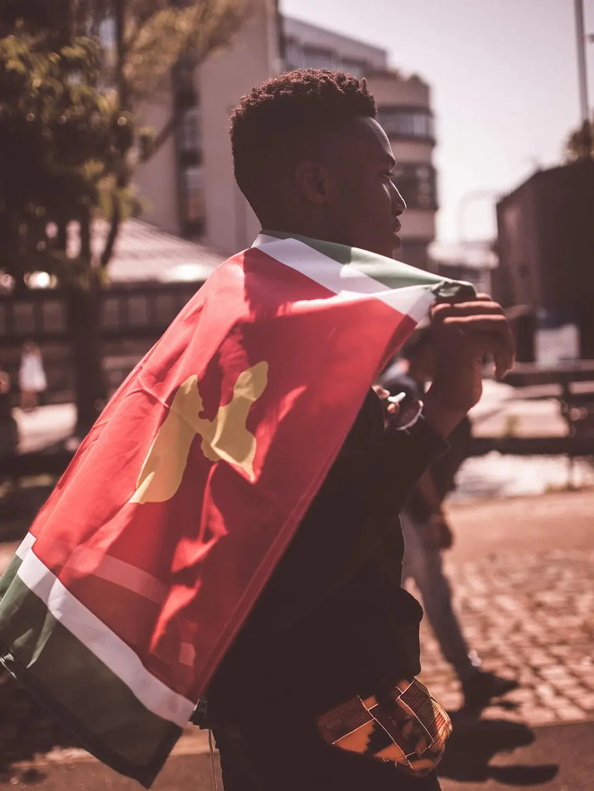
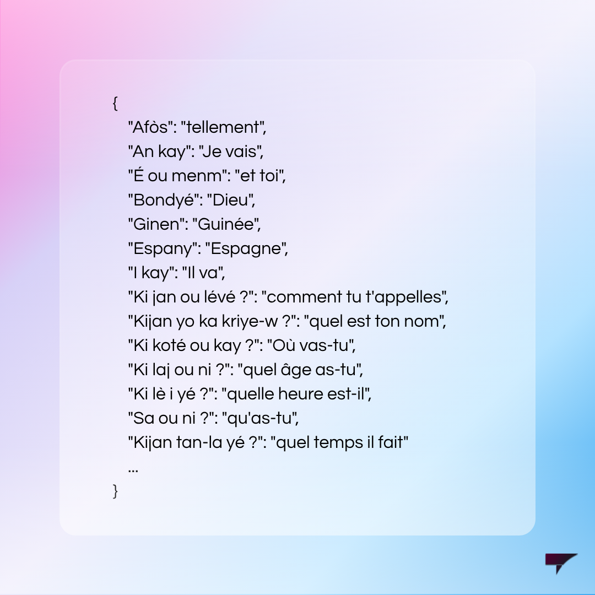
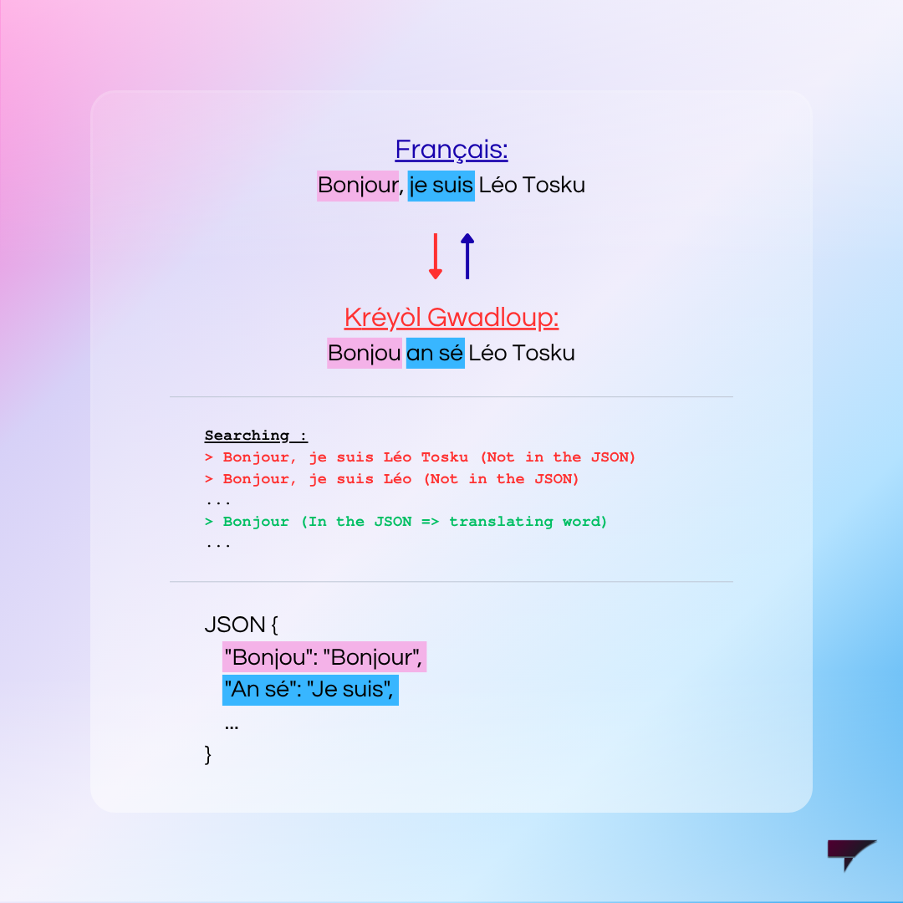
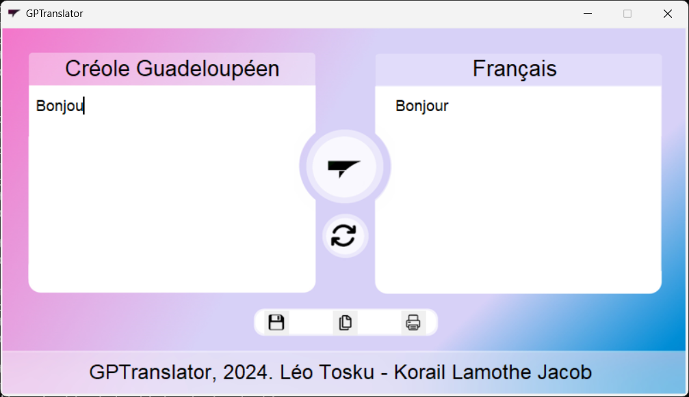

In 2023, as a first-year student at Lycée Sonny Rupaire in Sainte-Rose, Guadeloupe, I entered the Trophées NSI,
a competition requiring high school students to build a project in Python. I was living in Guadeloupe but
I’m not Guadeloupean. Every day I heard people around me speaking Guadeloupean Creole and understood
nothing. That gap wasn’t just uncomfortable, it was isolating.
The idea came from there: a real tool I
would actually use myself. With my classmate Korail Lamothe Jacob, who grew up speaking Creole, we
decided to build the first French ↔ Guadeloupean Creole translator in existence. Not a demo.
A working tool.
The language was everywhere. The tools to understand it didn’t exist. So we built them.
Guadeloupean Creole is spoken by hundreds of thousands of people. There is no mainstream dictionary for it. No translation API. No structured dataset. We searched everywhere, online, in libraries, across academic sources, and found nothing we could use programmatically. No bilingual wordlist. No structured corpus. No existing tool. We almost abandoned the project entirely. Then, after weeks of searching, I found a single old database of Guadeloupean terms, buried and unmaintained. It was incomplete, inconsistent, and riddled with errors. But it was the only thing that existed. We took it.

Korail and I went through the recovered database entry by entry. He corrected the Creole terms. I restructured everything into a clean JSON dictionary we could query programmatically. It isn’t perfect, Guadeloupean Creole has no standardized orthography, but it’s real: every entry verified by a native speaker, not generated. That database became the only foundation the algorithm could stand on.

The core problem with translating natural language into a low-resource language is that phrases rarely
have direct equivalents. A word-for-word lookup fails immediately.
So the algorithm works differently:
it takes the full input sentence and tries to match the longest possible substring against the
dictionary. If a match is found, that span is translated and the cursor advances past it. If no match
exists, it drops one word from the right and retries. If it reaches a single word with no match, that
word is left untranslated as-is, and the algorithm moves on to the next word and restarts.
The result
is a translation that maximizes phrase-level fidelity rather than forcing broken word-for-word
substitutions.

The tool supports both directions: French to Creole, and Creole to French. The interface was built with Tkinter, simple, functional, immediately usable without installation. Input field, language selector, translate button, output display. No account. No API calls. Entirely local, entirely offline. The design decision was deliberate: a tool meant to run on school computers in Guadeloupe couldn’t depend on an internet connection.

A tool built from nothing, for a language the internet had forgotten.
A fully functional Python desktop application: bidirectional French ↔ Guadeloupean Creole
translation, a hand-corrected bilingual JSON dataset, and a greedy longest-match algorithm built from scratch
with no NLP library. The jury awarded it a special selection, recognized without placing in the top prizes,
for tackling a problem that had no existing solution.
What it proved: the hardest part of a technical project
isn’t always the code. It’s finding the data when no one thought to gather it yet.
Léo Tosku · Korail Lamothe‑Jacob (native speaker & dataset correction)